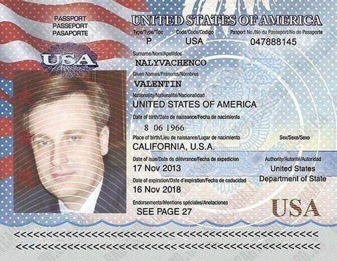
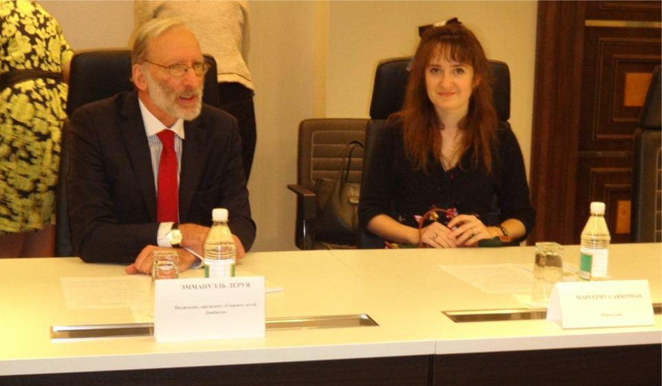
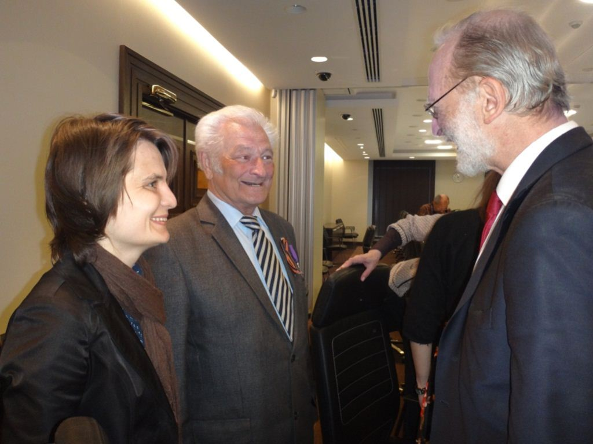

Je vais essayer de vous présenter ma vision de la guerre que l’occident mène dans le Donbass depuis bientôt deux ans par l’intermédiaire de ses supplétifs de Kiev ou par les mercenaires venus du monde entier pour « casser du moskal » comme certains disent à Lvov.
La grande erreur de mon point de vue, serait de s’en tenir aux apparences, et même de celles qui ont été peu médiatisées, du moins en occident. Ainsi par exemple, tous ici nous savons, grâce à Madame Victoria Nuland que les Etats-Unis ont investi 5 milliards de dollars depuis 1991 en Ukraine. Officiellement, cet argent a été investi pour, je cite Mme Nuland « favoriser la participation citoyenne et la bonne gouvernance… et aider l’Ukraine à devenir prospère, sûre et démocratique ». Il est certain que lorsque l’on vient en Ukraine aujourd’hui, on voit partout la prospérité, la sécurité et la démocratie !!!
Je ne connais pas le détail de l’affectation de ces 5 milliards de dollars, mais j’ai observé que pendant ces années post-soviétiques en Ukraine comme dans d’autres pays de l’ancien Pacte de Varsovie, on avait vu de nombreux pasteurs évangélistes venir convertir les populations, car la propagande religieuse est une des armes qu’utilisent les anglo-saxons pour subvertir les esprits. Une partie de ces 5 milliards a certainement été utilisée aussi pour transformer les manuels scolaires et les « ukrainiser » afin de favoriser l’émergence d’un sentiment national ukrainien qui se dresserait contre Moscou ou tout ce qui représente l’âme russe. De la même façon, ont dû être financées par Mme Albright, M. Soros et leurs amis des associations culturelles ou religieuses pour développer les sentiments anti-russes.
Depuis l’élection de Léonid Kravtchouk en 1991 jusqu’à nos jours, c’est-à-dire pendant un quart de siècle, les américains auraient donc investi 5 milliards de dollars pour arracher l’Ukraine à la sphère d’influence de Moscou. Cet argent aura été employé dans les sphères politiques, religieuses, artistiques et culturelles, économiques, afin d’influencer les esprits et de provoquer des mutations profondes dans la pensée des gens par la réécriture de l’histoire, la désinformation, l’occultation de certains faits ou la déformation de ceux-ci. Voilà très exactement la définition de ce que les américains appellent eux-mêmes le « soft power ».
 VALENTIN NALYVACHENKO, le chef du SBU (service secrets Ukrainien) détiens la nationalité États-unienne. L’individu à été consul général d’Ukraine à Washington.Ce concept développé dans son livre « Bound to Lead » par le professeur américain Joseph Nye dans les années 90 du siècle dernier soutient qu’il est possible d’affirmer sa puissance aujourd’hui par la persuasion et la contrainte douce sans avoir à utiliser d’emblée la puissance militaire ou les moyens de rétorsion. Mais comme les Américains n’ont gardé de leur médiocre mythologie et de leur courte histoire que les bagarres entre les cow-boys et les indiens, ils ont donc ajouté à ce concept de soft power celui de « smart power » ou pouvoir intelligent, c’est-à-dire une combinaison de la force pure (Afghanistan, Irak, Libye, Syrie…) et de la contrainte qui peut s’appliquer par exemple sous la forme de sanctions économiques comme celles dont souffre la Russie aujourd’hui ou comme l’ont subi des pays comme l’Iran ou Cuba et bien d’autres encore.
Mais ces méthodes de soft power peuvent s’appliquer aussi aux « alliés », je dirais plutôt aux vassaux, c’est-à-dire à des pays comme la France à qui on interdira de vendre des bateaux à la Russie (en violation totale de toute les règles commerciales et du droit international) et à qui on infligera des sanctions financières colossales, comme l’amende de 9 milliards de dollars imposée à la BNP parce qu’elle avait couvert des transactions commerciales avec l’Iran (interdites par les USA) et au motif qu’elle avait utilisé des dollars pour cela.
Bref, comme nous le voyons, ce qu’ils appellent le soft ou le smart power ressemble beaucoup aux méthodes de la mafia où il faut faire beaucoup de révérences au Parrain pour qu’il vous laisse manger votre os dans votre gamelle et qui vous brise les reins si vous l’offensez ou s’il estime qu’il doit vous voler ce que vous possédez.
Mais revenons à la notion de temps. On disait tout à l’heure que les Américains se vantaient d’avoir investi 5 milliards depuis 1991. Une première impression serait de se dire qu’ils travaillent vraiment sur le long terme et qu’il y a au Département d’Etat à Washington ou au Pentagone, des hommes et des femmes en place depuis l’élection de George Bush père, qui ont une haine rabique de la Russie et qui continuent, année après année à porter des coups aux descendants d’Ivan Grozny.
Mais cette première impression, même si elle n’est pas fausse, est largement insuffisante pour comprendre la véritable nature des ennemis de toutes les Russies. Nous allons voir tout à l’heure que les prémisses de cette lutte pour la domination du monde, car c’est de cela dont il s’agit, remontent beaucoup plus loin que les années 90 du siècle dernier, et même bien avant la guerre froide.

Intervention de M. Emmanuel LEROY à la Table ronde « La Situation dans le Donbass dans le contexte des processus géopolitiques contemporains » à Donetsk, le 10 mai 2016
Nous étions en février dernier à Moscou, avec mes amis Xavier Moreau et Nikola Mirkovic ici présents, invités par le prestigieux Institut Russe d’analyse Stratégiques (RISI) pour une conférence bilatérale franco-russe sur la lutte contre le terrorisme. Dans mon intervention, j’ai tenté de démontrer que la lutte contre le terrorisme nous ramenait inévitablement vers ceux qui en sont les promoteurs et qui utilisent la haine des musulmans salafistes contre tout ce qui n’est pas l’Islam pour déstabiliser les sociétés que les USA ont décidé de détruire.
J’en veux pour preuve cet extraordinaire aveu paru dans le New-york Times du 23 janvier 2016 :
Je cite « Lorsque le Président Obama a secrètement autorisé la Central Intelligence Agency à commencer à armer les combattants rebelles de Syrie en 2013, l’agence d’espionnage savait qu’elle aurait un partenaire disposé à aider à financer l’opération clandestine. C’était le même partenaire sur lequel la CIA s’est appuyée pendant des décennies pour son argent et sa discrétion dans les conflits lointains : le royaume d’Arabie saoudite. »
« Depuis lors, la CIA et son homologue saoudienne maintiennent un accord inhabituel pour la mission d’entraînement des rebelles, à laquelle les Américains ont donné le nom de code de Timber Sycamore. Avec cet accord, selon d’actuels et anciens hauts fonctionnaires, les Saoudiens fournissent à la fois des armes et de grosses sommes d’argent, et la CIA dirige l’entraînement des rebelles au maniement des fusils d’assaut AK-47 et des missiles antichars. »
« Le soutien aux rebelles syriens n’est que le chapitre en cours d’une relation qui dure depuis des dizaines d’années entre les services d’espionnage d’Arabie saoudite et les États-Unis, une alliance qui a traversé le scandale Iran-Contra, le soutien des moudjahidines contre les Soviétiques en Afghanistan et les combats par procuration en Afrique… »
… « Ils ont compris qu’ils ont besoin de nous, et nous comprenons que nous avons besoin d’eux, » a déclaré Mike Rogers, originaire du Michigan, ancien membre républicain du Congrès…
« …Les hauts fonctionnaires n’ont pas révélé le montant de la contribution saoudienne, bien plus importante que celle des autres nations, au programme d’armement des rebelles contre l’armée du président Bachar el-Assad. Mais on estime le coût total de l’armement et de l’entraînement à plusieurs milliards de dollars… ». Fin de citation.
Pourquoi parler du terrorisme et de la guerre en Syrie dans une intervention consacrée aux racines de la guerre dans le Donbass. Eh bien tout simplement parce que ces événements sont liés. Derrière les extrémistes de Praviy Sektor ou les mercenaires polonais, baltes ou anglo-saxons envoyés par le régime fantoche et illégitime de Kiev, il y a les mêmes ONG, les mêmes banques internationales, les mêmes sociétés multinationales, les mêmes « think tanks » que ceux qui opèrent en Syrie, au Yemen ou en Libye aujourd’hui ou qui intervenaient en Tchétchénie et en Géorgie hier.
Mais toutes ces actions terroristes, ces « révolutions de couleur», ces renversements de régime, ce ne sont que les symptômes aigües d’une pathologie bien plus grave et bien plus enkystée dans le monde et que j’ai baptisée l’idéologie anglo-saxonne. Et cette idéologie a pris racine en Angleterre voilà de nombreux siècles.
Qu’est-ce que l’idéologie anglo-saxonne et comment est-elle née ?
Il faut pour cela à mon avis remonter à la période élisabéthaine de la monarchie anglaise, à la fin du XVIème siècle et au début du XVIIème. Cette époque est marquée par les guerres de religion initiées par l’irruption du protestantisme et par l’affrontement de la monarchie française avec la dynastie des Habsbourg sur la scène européenne. En 1600, l’Angleterre ne compte que 4 millions d’habitants quand la France en compte près de 20 millions. Cette faiblesse démographique comparée aux puissances continentales de l’époque, France et empire des Habsbourg et la menace extrême qu’a représentée la tentative d’invasion de l’Angleterre par l’Invincible Armada du roi d’Espagne Philippe II est probablement à l’origine de la politique suivie depuis lors par les élites britanniques (politique du faible au fort), à savoir provoquer la division et l’affrontement chez tous leurs ennemis potentiels. Leur seul atout est la puissance maritime et il leur faudra l’exploiter à fond, par tous les moyens, notamment la piraterie et le commerce.
Le grand rêve de puissance et d’hégémonie mondiale des Anglais est né, selon moi, au retour de l’expédition autour du monde du pirate Francis Drake le 26 septembre 1580 où la part du butin volé aux Espagnols et réservée à la reine Elisabeth représentait selon certaines sources une fois et demie le budget annuel du royaume.
Francis Drake est probablement devenu après ses exploits le modèle à suivre et parmi ses nombreux admirateurs, un en particulier mérite d’être retenu, William Raleigh (cf. controverse Ecole de la nuit), car il est le premier, selon les sources dont je dispose, à avoir conceptualisé l’hégémonie anglo-saxonne sur le monde lui-même ».
En effet, ce gentilhomme, probablement athée, un peu pirate lui aussi, un peu aventurier et qui finit décapité à la tour de Londres, eut le temps d’écrire avant sa mort un ouvrage intitulé en toute simplicité l’Histoire du monde et dans lequel il affirme : « Qui tient la mer tient le commerce du monde, qui tient le commerce tient la richesse, qui tient la richesse du monde tient le monde.
Donc c’est là, à mon avis, à partir de la prise de conscience de cet exploit de piraterie exceptionnel, qu’est née cette idée de parvenir à la suprématie mondiale par la puissance maritime et l’accaparement des richesses d’autrui.
Mais cette idée, véritablement révolutionnaire, s’est transmise de génération en génération à travers les siècles dans le monde anglo-saxon (par deux sources, souvent liées : source exotérique universitaire et source ésotérique franc-maçonnerie), notamment chez le Britannique Mackinder dont la formule maîtresse est « qui tient l’Europe orientale tient le heartland, qui tient le heartland domine l’île mondiale, qui domine l’île mondiale domine le monde » et qui s’est transformée chez l’Américain Spykman dans la formule plus ramassée « Qui contrôle le rimland gouverne l'Eurasie ; qui gouverne l'Eurasie contrôle les destinées du monde ».
 M. Emmanuel LEROY, M. Guennady KLIAGUINE et Mlle Hélène SYDOROVA à la Table ronde à DonetskCe qui est extraordinaire c’est qu’à trois siècle de distance, ces trois personnages partagent tous l’idée de domination du monde et c’est là véritablement qu’il faut comprendre la nature profonde de cette idéologie anglo-saxonne : c’est en toute simplicité l’hégémonie totale sur les affaires du monde, ce qu’ils appellent aujourd’hui la gouvernance mondiale et qui n’est que la continuation du Grand jeu dont parlait Rudyard Kipling au XIXème siècle.
Et dans ce Grand jeu la plupart des grands acteurs de la scène mondiale ont été vaincus les uns après les autres, souvent par procuration, par le petit peuple britannique qui ne comptait que 4 millions d’individus il y a peine 4 siècles et qui a essaimé à travers le monde avec les pseudopodes du Commonwealth et de la grande Amérique : ce qu’ils appellent eux-mêmes les Fives Eyes (Royaume-Uni, USA, Australie, Canada et Nouvelle Zélande).
Voilà mes Chers Amis les raisons pour lesquelles des obus explosent tous les jours dans le Donbass aujourd’hui et tuent indifféremment des hommes, des femmes, des enfants.
Ce n’est pas une guerre civile entre Ukrainiens de l’est et de l’ouest, c’est la suite de la guerre de Crimée de 1856, des deux guerres mondiales et de beaucoup d’autres, bref c’est la poursuite du Grand Jeu de Kipling qui ne cessera que le jour où l’idéologie anglo-saxonne aura triomphé ou aura été vaincue.
La Russie représente aujourd’hui le dernier point de résistance contre l’empire anglo-saxon et ses métastases. Le Donbass est aux avant-postes de cette guerre sans merci.
Stavaï Donbass ! Tenez bon, la liberté du monde dépend de vous !
Partager cette page